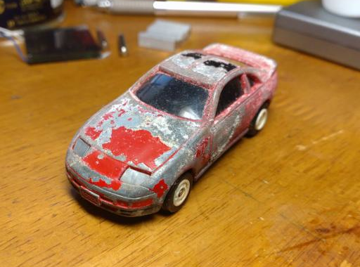
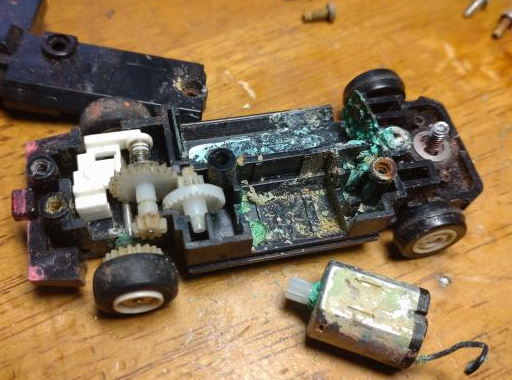
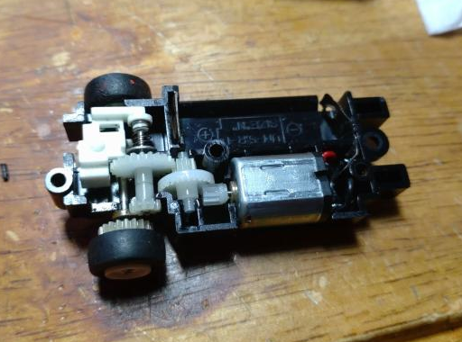
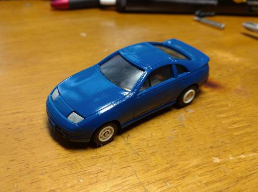

50円で買ったZ32のモータートミカを直す。パート1

先日、とある旧車のイベントに行ったときに、
フリマでこのZ32のモータートミカが売ってたので、つい買ってしまった…。
ここまでやられてるは中々無いだろうな…と思いつつ、買ったからには直していきます。

早速、分解すると、この有様。
モータからスイッチの機構まで全部、電解液が回って死んでます。
一遍の望みを掛けモータを分解してみると、中から緑錆が…。ご愁傷様です。
とりあえずメッキ類はお酢に漬けて錆を落としました。
錆を落としてる間に、家のジャンク箱からよさげなモータを探します…

ありました。PS1のディスクドライブのモータを拝借する事にします。
（因みに昔、ジャンクで買った最初期のPS1の生贄にしたPS1です。歯車を固定するパーツが死んでます。）
取り付ける際、シャフトが長いのでニッパで切っちゃいます。

収まりました。
スイッチの機構にはプラスチックを溶着したものがありますが、
溶着ではみ出た部分のみを切って取り外し、取り付ける時は半田ごてを上手く当てると元通りになると思います。
それでもダメならな、黒のプラ棒（ランナーとか？）を使い、溶接のような感じで修復すれば割と元通りになります。
ボディの方はワイヤーブラシで塗装を落として、テキトーに下処理して塗っておきました。

錆はテキトーにレジンを持って削って…と、まあ、うん。雑だよね(^^;
外すときに窓のパーツが割れちゃったから、なんかで直さないと…orz
作るか分からないパート2に期待（？）